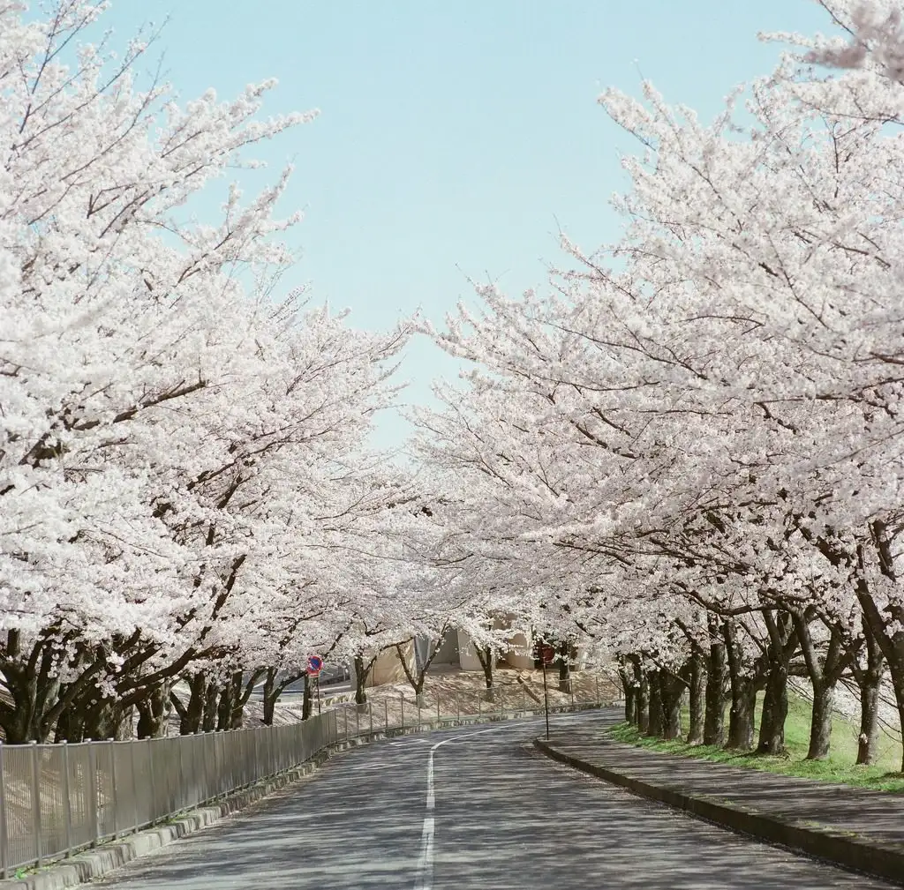
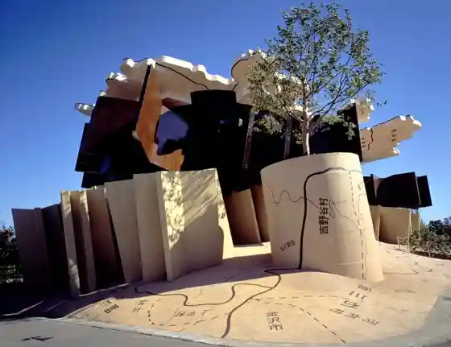
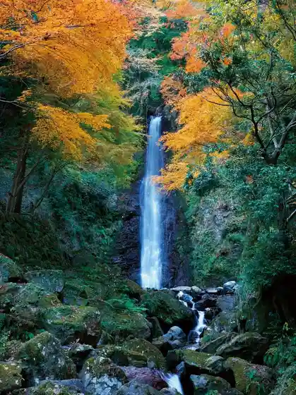
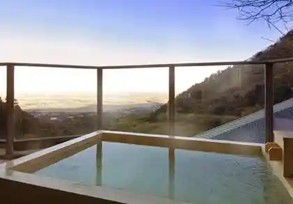
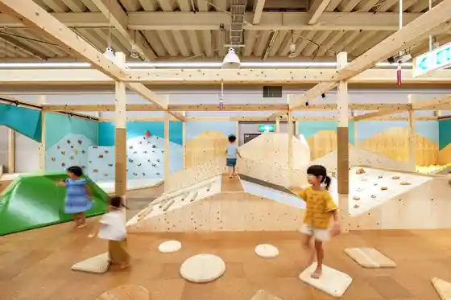

Yoro, Gifu
Yoro · Gifu
Yoro
Highlighted on the Gifu map.

Sights
Yoro Park Yoro Falls
Yoro Tenmei Hanten Chi

Yoro Park no Autumn Leaves

Yoro Onsen

Mori no Wakuwaku no Niwa Yoro Mise

Yoro Land
Yoro Park Cherry Blossoms
Kanaya Kawara no Kassen Shi Suga Shrine Shogaku Tera